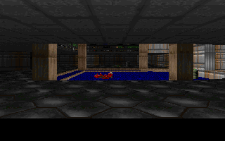
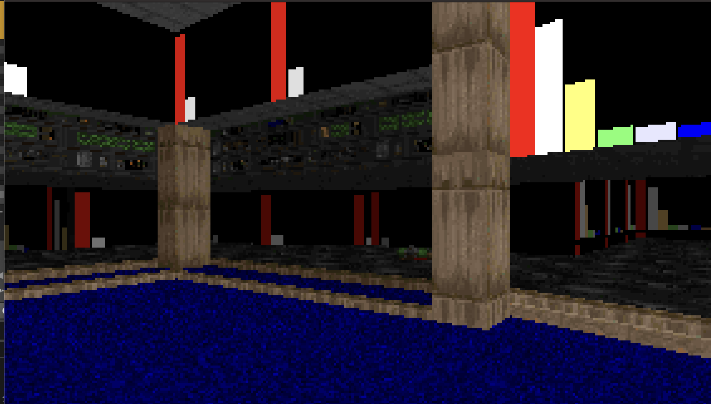
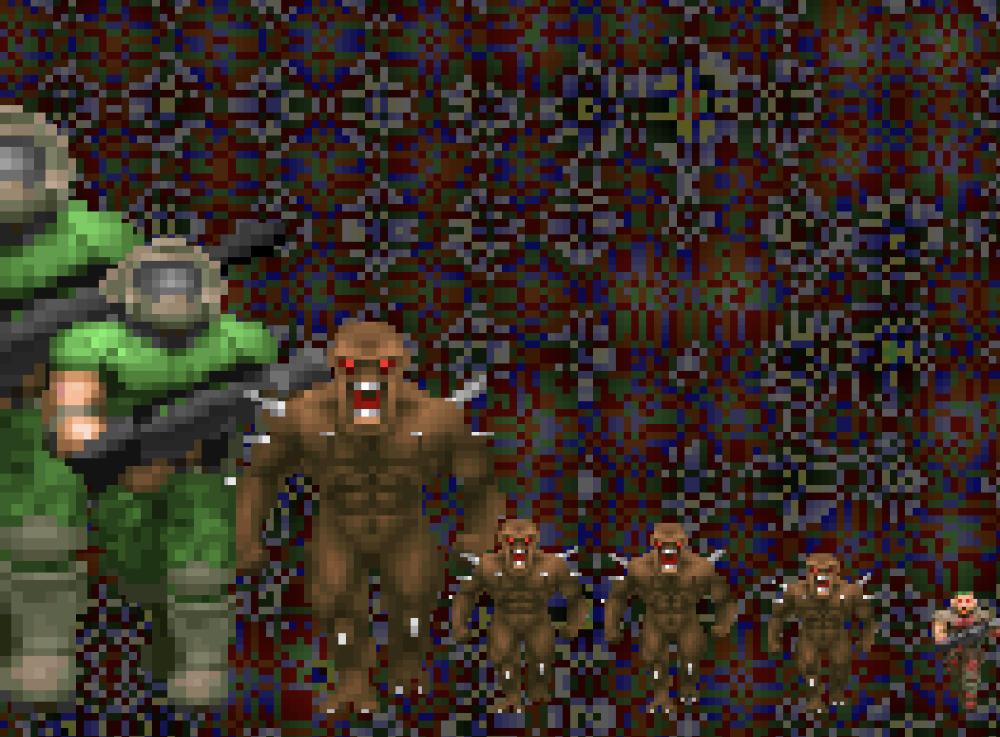

A VST3 / AU music visualizer driving the Doom (1994) renderer
Drop DoomViz on a track. Your music animates E1M1. Audio passes through unchanged — the plugin is purely visual. A floating control window switches scenes without covering the renderer, so you can put the visual on a separate display.

Walks E1M1 with the shotgun. Audio onsets spawn monsters in front of the player. Auto-fires at nearby enemies while audio is playing. Sector lighting pulses with RMS. God mode, infinite ammo, monsters are non-solid.

Walks E1M1 with the BFG9000. Eight audio bands are injected as colored bars onto
the STARTAN3 wall texture in real time. Player movement speed tracks
the sub-bass band — bass moves you, silence stops you.

2D mode. Audio-driven background behind eight Doom sprites whose size scales with per-band audio. Band frequencies, per-band sprite, per-band gain, and the background pattern itself are all editable from the Patch Settings window.
Switch scenes via the floating control window or MIDI Program Change. Each switch reloads the map for full state isolation — no state bleeds between scenes.
Browse the VRT baseline gallery → — per-frame snapshots from each scene that the visual regression suite asserts against on every commit.
Click Patch Settings on the floating control panel to open the editor for the active scene. Edits stage in the UI — only the Apply button (lower-right) commits them to the renderer. Switching scenes silently reverts pending edits. State persists with the DAW project.
bandAmplitude × (gain × 4.0). Slider all the way left hides
the sprite for that band.The Background Vibe dropdown switches the backdrop pattern:
STARTAN3,
BROWN1, COMPSTA1, COMPUTE1, TEKWALL1,
BROWNHUG, BIGDOOR2, METAL); advances to the next
texture each time band 3 crosses 50%.Audio thread to render thread is lock-free via juce::AbstractFifo ring buffer
and atomic MIDI state.
Optional configs in config/ map analyzer outputs to scene parameters with per-channel
gain, offset, smoothing, and per-route blend modes. Without a config, sane audio defaults are auto-wired.
inputs:
kick_env:
source: audio
mode: band_rms
band: [20, 200]
smoothing: 0.05
gain: 2.0
routes:
- from: kick_env
to: sector_light.all
scale: 1.0
The stripped linuxdoom-1.10 renderer was ported to 64-bit macOS and extended with:
doom_move_player — collision-checked movement via P_TryMovedoom_set_camera_angle — rotate without relinking the blockmapdoom_set_wall_texture_data — replace a wall texture's column data at runtimedoom_set_flat_data — replace a floor / ceiling flatdoom_get_sprite — pull raw patch_t datadoom_fire_weapon / doom_give_weapondoom_set_god_mode / doom_respawn_playerDownload DoomViz-vX.Y.Z.vst3.zip from the latest
GitHub Release. The
bundle is signed with an Apple Developer ID and notarized + stapled by Apple, so it loads
in any DAW without Gatekeeper warnings or xattr -cr workarounds:
unzip DoomViz-vX.Y.Z.vst3.zip -d ~/Library/Audio/Plug-Ins/VST3/
Then rescan plugins in your DAW. The bundle is arm64 (Apple Silicon).
Download the DoomViz-vX.Y.Z-linux-x86_64.tar.gz artifact from the latest
GitHub Release and extract
DoomViz.vst3 into one of the standard VST3 paths:
tar xzf DoomViz-v0.4.0-linux-x86_64.tar.gz -C ~/.vst3/ # or system-wide: sudo tar xzf DoomViz-v0.4.0-linux-x86_64.tar.gz -C /usr/lib/vst3/
Download the DoomViz-vX.Y.Z-windows-x64.zip artifact from the latest
GitHub Release and extract
the DoomViz.vst3 folder into one of the standard VST3 locations:
C:\Program Files\Common Files\VST3\%LOCALAPPDATA%\Programs\Common\VST3\Expand-Archive DoomViz-v0.4.0-windows-x64.zip -DestinationPath "$env:CommonProgramFiles\VST3\"
Then rescan plugins in your DAW.
The Windows build is not yet Authenticode-signed, so the first time your
DAW loads the plugin you'll see a SmartScreen "Windows protected your PC" warning. Click
More info → Run anyway, or right-click
DoomViz.vst3\Contents\x86_64-win\DoomViz.vst3 → Properties
→ check Unblock before scanning. After that one-time unblock, the plugin
loads silently every subsequent run.
All builds run inside Flox, which manages cmake / ninja / git-lfs / python deps. The only host requirement is the platform compiler:
xcode-select --install)Build via Task (also installed by flox):
git clone --recursive <repo> cd doom_viz flox activate task build # builds for the current platform task install-mac # macOS only: installs the VST3 task test # runs the render baseline test task --list # see all tasks
DOOM1.WAD (shareware) is auto-bundled into the plugin during build.
From macOS, building a Linux VST3 runs inside a flox-managed Linux container.
Signed + notarized release bundles are produced by tag-triggered CI on each
vX.Y.Z tag and attached to the matching GitHub Release.